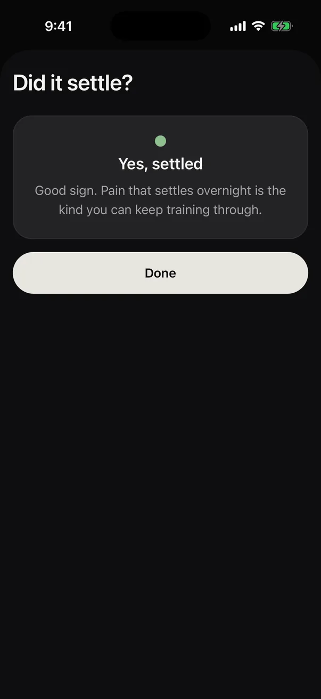

01 · Every morning
Two quick questions, before anything else.
If you logged pain yesterday, RECO asks whether it settled overnight: yes, a bit, or no. Then a thirty-second check-in, pain and swelling. Both wait at the top of Today until you answer.

